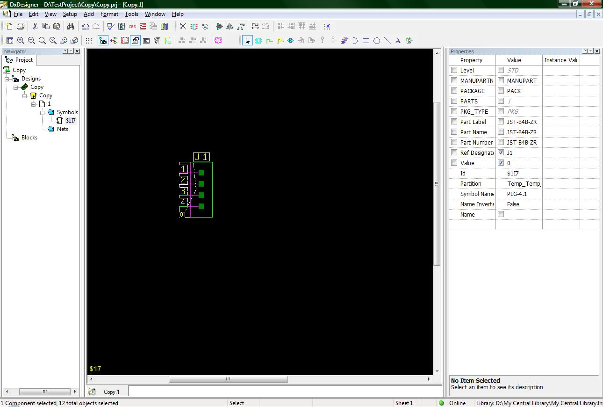
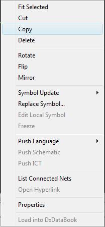

Copying Parts:
While using DxDesigner, copying parts is not as easy as it seems. Most would assume that once you click Paste from the right click menu, the part should be pasted. Oddly enough this run of logic does not apply here.
This tutorial describes the process you must go through in order to make copies of parts.
Let's start with a simple example.

(1-start.jpg)
The previous image shows one part that I have placed on my sheet. The part that I will be copying does not matter so you can do this tutorial with your own library.
If you right click on a part you will get the following right click menu.

(2-right_click_menu.jpg)
As you can see I have already highlighted the Copy function. Left click it to begin the copy process.
Immediately after clicking the Copy option from the right click menu, open up the schematic's right click menu by right-clicking on the background of the schematic. This time click on the Paste option.
Now you will notice that nothing has happened. This is because Mentor has decided that in order to paste a copy of any part, you must also left click at the spot you want the part placed. After you have placed the copy of your part, do not forget to change the Ref_Des name. In addition, if you want to paste another copy of the part you will need to left click on the background of your schematic in order to take focus away from the part you just copied. Now open the right click menu again and follow the directions I gave earlier to paste another copy of your part.
NOTE: is that this can also be done by using the ctrl-c and ctrl-v commands as well.